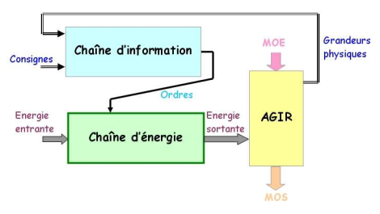
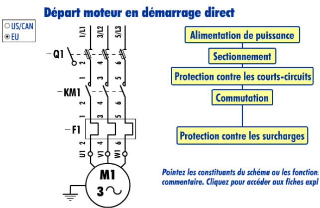
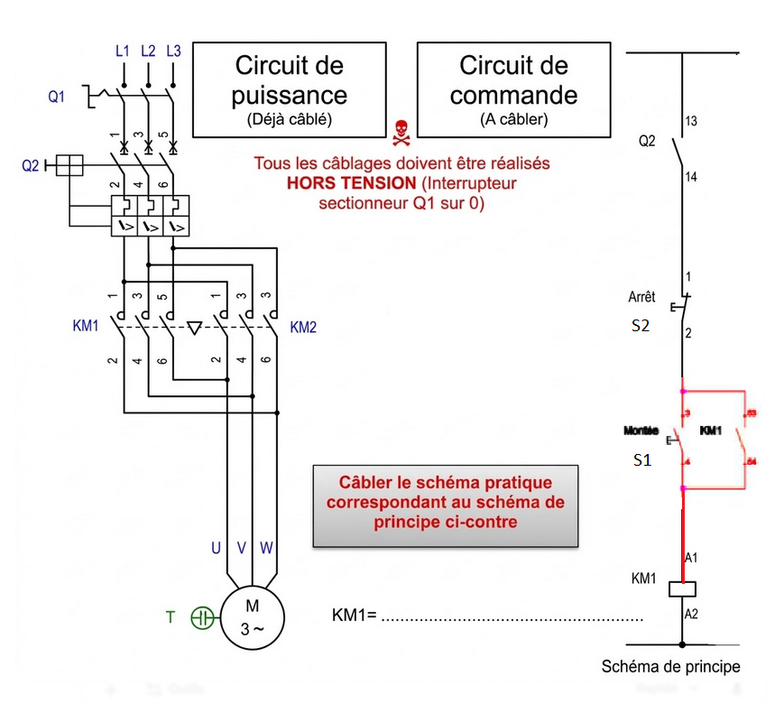
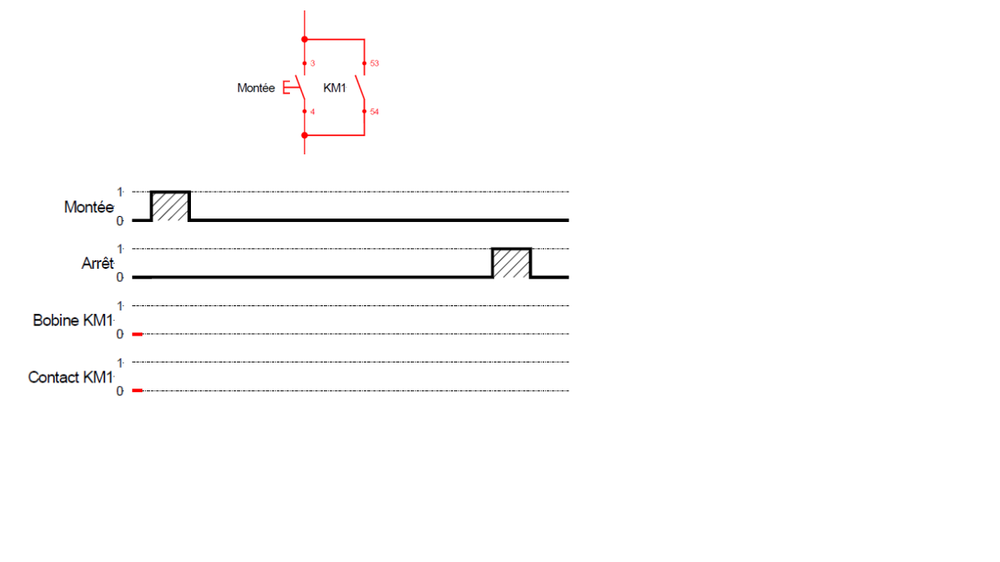
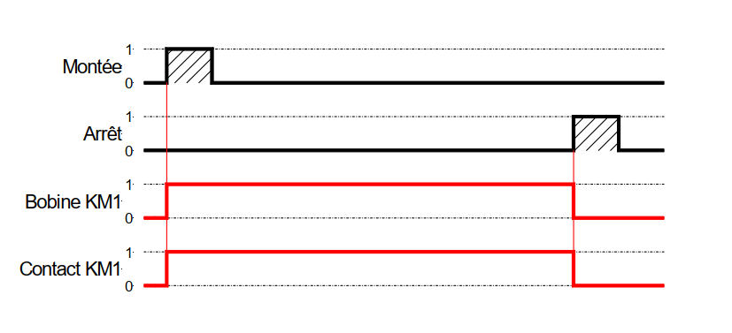
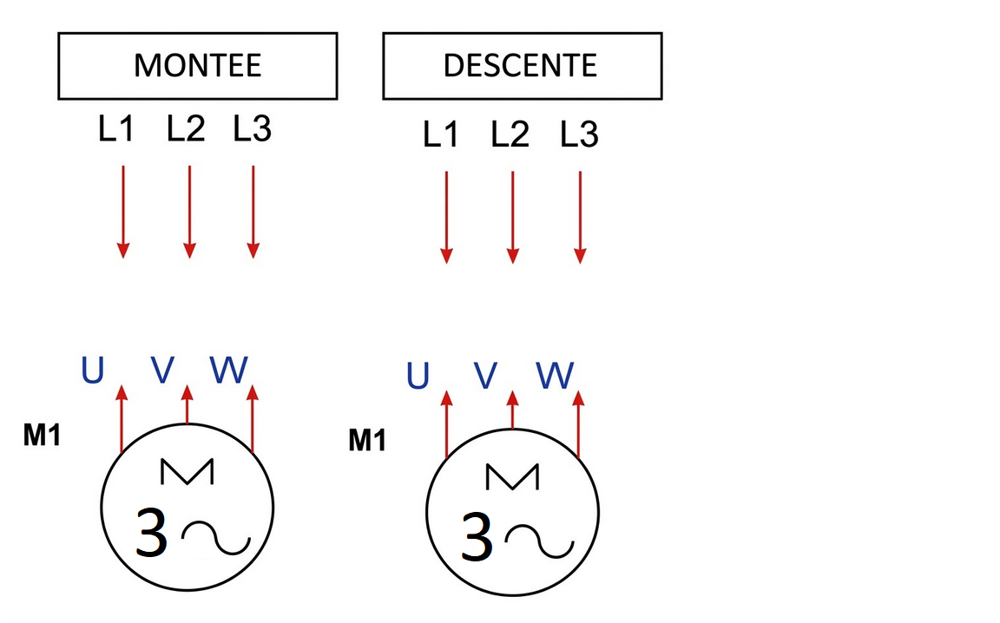
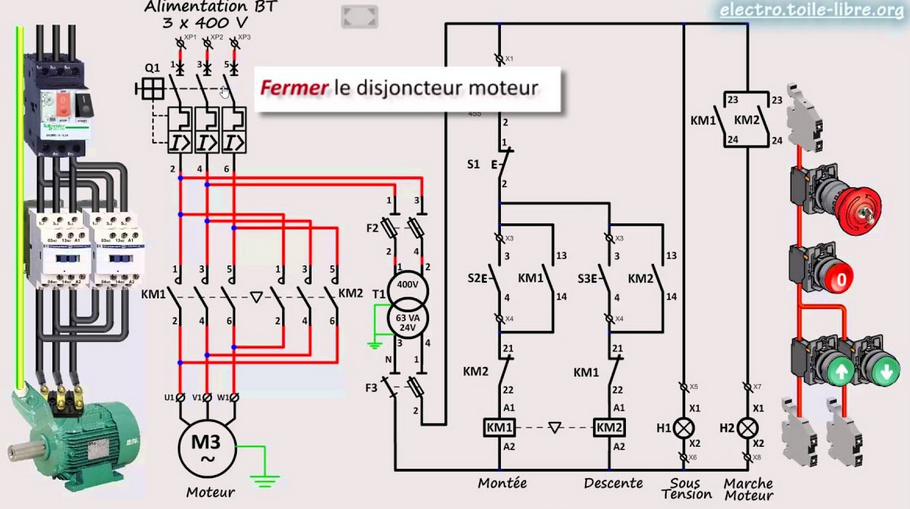

🎯 Mise en situation et objectifs
Dans le cas de la manutention de pièces lourdes, il est souvent impossible pour un opérateur de manipuler ou déplacer certains objets seul. La législation du travail impose des limites aux charges soulevées. Pour résoudre ce problème, on utilise des engins de type pont roulant, palan, portique…
- Comment fonctionne un moteur asynchrone triphasé ?
- Quelle est la composition de la chaîne d'énergie d'un moteur asynchrone ?
📥 Ressources – Documents de travail
Télécharger les documents nécessaires :
- 📄 Chaîne d'énergie MAS – Sujet + Document réponse
🎬 Vidéos – Systèmes de manutention
Pont roulant en action
Manipulateur industriel
Apport de connaissance – Structure générale
📐 Chaîne d'énergie d'un système technique
Tout système est composé d'une chaîne d'information et d'une chaîne d'énergie.

| ALIMENTER | DISTRIBUER | CONVERTIR | TRANSMETTRE | Résultat |
|---|---|---|---|---|
ALIMENTER : Réseau triphasé 400 V
DISTRIBUER : Contacteur, sectionneur, relais thermique
CONVERTIR : Moteur asynchrone (électrique → mécanique)
TRANSMETTRE : Réducteur, câble, tambour
Résultat : Mouvement de la charge (montée / descente)
Apport de connaissance – Composants du départ moteur
Q1 – Sectionneur à fusibles
Isolement du circuit + protection contre les courts-circuitsKM1 – Contacteur
Commutation de la puissance sur ordre de la chaîne de commande
Source : Guide des automatismes.
- Compléter la chaîne d'énergie ci-dessous en notant, en couleur, le nom du matériel associé à chaque fonction (ALIMENTER, DISTRIBUER, CONVERTIR).
- Encadrer ces matériels sur le schéma de puissance avec les mêmes couleurs.
- Noter les types d'énergies mis en jeu dans la chaîne.

ALIMENTER : Réseau triphasé 400 V / 50 Hz → sectionneur à fusibles Q1
DISTRIBUER : Contacteur KM1 (+ relais thermique F1 pour protection)
CONVERTIR : Moteur asynchrone triphasé M (électrique → mécanique)
TRANSMETTRE : Arbre moteur → réducteur → tambour / câble
Énergies : électrique triphasée → électrique protégée → mécanique de rotation → mécanique de translation (charge)


- Câbler le schéma du circuit de commande.
- Faire vérifier par le professeur avant la mise sous tension.
- Vérifier que le disjoncteur magnéto-thermique est réarmé (contacts Q2 fermés).
- Maintenir le bouton « Montée » enfoncé et observer KM1 et le moteur.
- Tester les différentes combinaisons et compléter la table de vérité.
Table de vérité :
| Arrêt (S1) | Montée (S2) | KM1 | Moteur |
|---|---|---|---|
| 0 | 0 | ||
| 0 | 1 | ||
| 1 | 0 | ||
| 1 | 1 |
Équation de la bobine KM1 :
| Arrêt (S1) | Montée (S2) | KM1 | Moteur |
|---|---|---|---|
| 0 | 0 | 0 | Arrêté |
| 0 | 1 | 1 | Tourne (Montée) |
| 1 | 0 | 0 | Arrêté |
| 1 | 1 | 0 | Arrêté (S1 prioritaire) |
KM1 =
S2 · /S1 · /F1
Sans auto-maintien : KM1 se coupe dès qu'on relâche S2.

- Faire fonctionner le moteur et observer ce qui se passe.
- Compléter le chronogramme ci-dessous.

Équation de KM1 avec auto-maintien :
KM1 = (S2 + KM1) · /S1 · /F1
Le contact KM1 (53-54) en parallèle sur S2 assure l'auto-maintien : une fois KM1 alimenté, il reste alimenté même si on relâche S2, jusqu'à l'actionnement de S1 (arrêt) ou du relais thermique F1.


- Câbler le circuit de commande.
- Tester la commande dans les deux sens (Montée / Descente).
Q1. Que se passe-t-il si l'on appuie sur « Descente » pendant la montée, ou sur « Montée » pendant la descente ?
Équations de KM1 et KM2 :
Raccordement des phases au moteur :

Q1. Sans verrouillage, les deux contacteurs KM1 et KM2 se fermeraient simultanément → court-circuit triphasé.
KM1 = (S2 + KM1) · /S1 · /KM2 · /F1
KM2 = (S3 + KM2) · /S1 · /KM1 · /F1
Montée : L1→U · L2→V · L3→W
Descente : L1→W · L2→V · L3→U
(inversion L1 et L3 → inversion du sens de rotation)
Q2. Que se passerait-il si KM1 et KM2 se ferment en même temps ?
Q3. Quelle solution TECHNIQUE permet d'interdire l'activation simultanée de KM1 et KM2 dans le circuit de PUISSANCE ?
Q4. Quelle solution ÉLECTRIQUE permet d'interdire l'activation simultanée dans le circuit de COMMANDE ?
Q2. Les phases L1, L2, L3 se retrouvent connectées directement entre elles → court-circuit triphasé : courant très élevé, destruction des contacts, risque incendie, déclenchement des protections.
Q3. Verrou mécanique (interlock) entre KM1 et KM2 : empêche physiquement les deux contacteurs de se fermer en même temps.
Q4. Verrouillage croisé : contact NC de KM2 en série dans la bobine de KM1, et contact NC de KM1 en série dans la bobine de KM2. Si KM1 est activé, son contact NC ouvre le circuit de KM2 (et réciproquement).
📌 À retenir – Essentiel
🔗 Chaîne d'énergie MAS

- Q1 sectionneur → ALIMENTER
- KM1 contacteur → DISTRIBUER
- F1 relais thermique → protection surcharge
- M moteur asynchrone → CONVERTIR
🔢 Équations logiques
Avec AM : KM1 = (S2+KM1)·/S1·/F1
2 sens KM1 = (S2+KM1)·/S1·/KM2·/F1
2 sens KM2 = (S3+KM2)·/S1·/KM1·/F1
⚠️ Inversion de sens
Inverser deux phases (L1 et L3) sur U/V/W → inversion du sens de rotation du MAS.